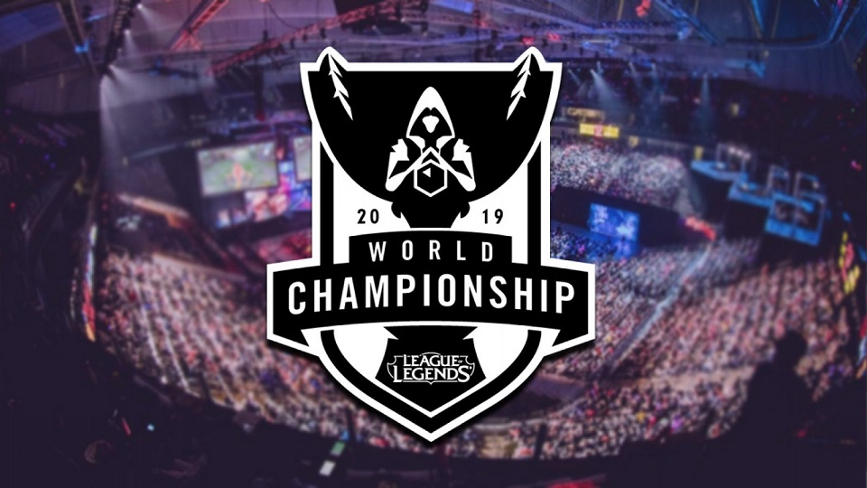

I have some forms of social media to appease my family but I generally try to avoid it altogether. I do frequently visit these sites, LoL eSports might make a resurgence to the top of this list with the World Championship going on right now but this seems pretty accurate. Reddit is a great time-killer filled with memes, news, and great insight from the userbase, while Wowhead helps me significantly while playing World of Warcraft.
